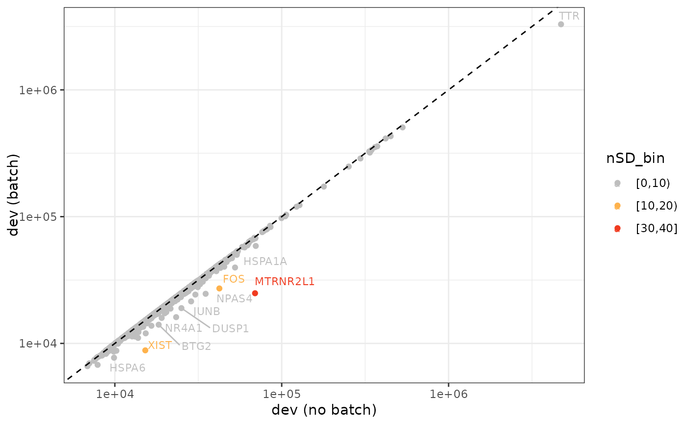

Function to filter out the bias genes based on selected selected threshold of nSD of deviance and rank in data frame or plot.
Arguments
- batch_df
data.frame: Input data frame generated fromfeatureSelection()function usingSpatialExperimentorSingleCellExperimentobject containing the raw data.- nSD_dev
integer: Number of standard deviation (nSD) on deviance difference. The default value is 5.- nSD_rank
integer: Number of standard deviation (nSD) on rank difference. The default value is 5.- visual
logical: Whether to display the detected bias genes by visualizations ofdevianceandrank. Default = FALSE to return the data frame. If it is TRUE, the returned format will be two parallel plots presenting bias genes based on bothnSD_devandnSD_rank.
Value
The output values will be the identified bias genes. The returned
format can be either a data frame or a list with two elements, giving
option to see either deviance or rank plot.
Examples
batch_df <- read.csv(
system.file("extdata","hpc_srt_batch_df.csv",package = "BiasDetect"))
# data frame
bias <- biasDetect(batch_df, nSD_dev = 10, nSD_rank = 5)
bias
#> GADD45B DUSP1 EGR1 NR4A1
#> "ENSG00000099860" "ENSG00000120129" "ENSG00000120738" "ENSG00000123358"
#> FOSB GADD45G EGR4 BTG2
#> "ENSG00000125740" "ENSG00000130222" "ENSG00000135625" "ENSG00000159388"
#> FOS JUNB NPAS4 JUN
#> "ENSG00000170345" "ENSG00000171223" "ENSG00000174576" "ENSG00000177606"
#> HSPA1B XIST MTRNR2L1
#> "ENSG00000204388" "ENSG00000229807" "ENSG00000256618"
# plots
bias_plot <- biasDetect(batch_df, nSD_dev = 10, nSD_rank = 5, visual = TRUE)
# deviance
bias_plot$deviance

# rank
bias_plot$rank